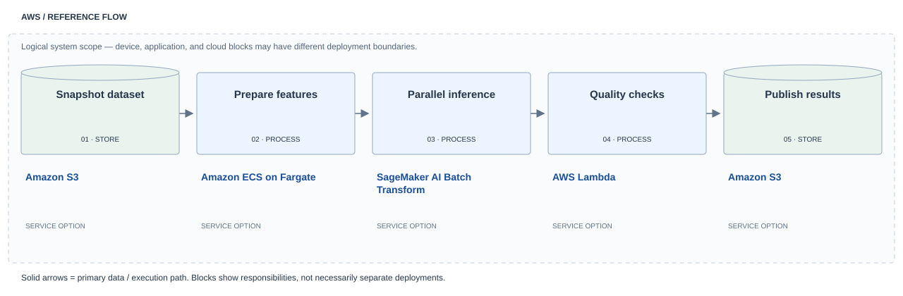
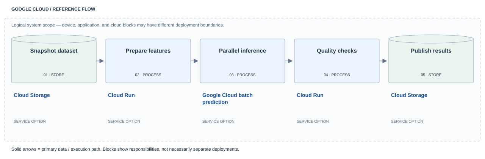
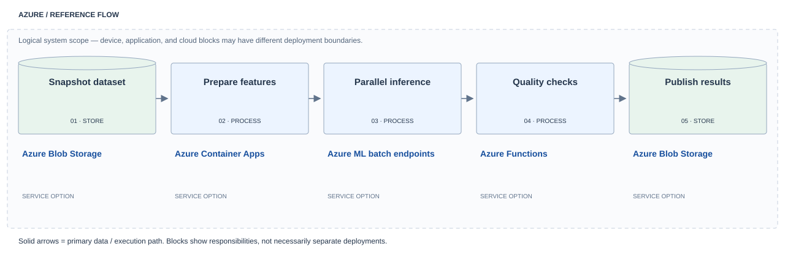

Results can wait and many records need the same operation.
Batch inference pipeline
Process a dataset on a schedule and publish versioned outputs.
Map the building blocks to a cloud
Choose a provider to see service suggestions beside each block. These are illustrative compositions, not identical service offerings or complete deployment templates.
AWS implementation

| Building block | Service / component | Implementation responsibility |
|---|---|---|
| 01Snapshot dataset | Amazon S3 ↗ | Version input or output objects and configure access, retention, and atomic publishing conventions. |
| 02Prepare features | Amazon ECS on Fargate ↗ | Host custom workers or session logic; implement deadlines, cancellation, state, and recovery. This host is not itself a model. |
| 03Parallel inference | SageMaker AI Batch Transform ↗ | Shown for a supported custom prediction model; foundation models may require a different model-specific batch API. |
| 04Quality checks | AWS Lambda ↗ | The named service hosts application code; supply validation, adapters, and business logic yourself. |
| 05Publish results | Amazon S3 ↗ | Version input or output objects and configure access, retention, and atomic publishing conventions. |
Google Cloud implementation

| Building block | Service / component | Implementation responsibility |
|---|---|---|
| 01Snapshot dataset | Cloud Storage ↗ | Version input or output objects and configure access, retention, and atomic publishing conventions. |
| 02Prepare features | Cloud Run ↗ | Host custom workers or session logic; implement deadlines, cancellation, state, and recovery. This host is not itself a model. |
| 03Parallel inference | Google Cloud batch prediction ↗ | Shown for a supported custom prediction model; foundation models may require a different model-specific batch API. |
| 04Quality checks | Cloud Run ↗ | The named service hosts application code; supply validation, adapters, and business logic yourself. |
| 05Publish results | Cloud Storage ↗ | Version input or output objects and configure access, retention, and atomic publishing conventions. |
Azure implementation

| Building block | Service / component | Implementation responsibility |
|---|---|---|
| 01Snapshot dataset | Azure Blob Storage ↗ | Version input or output objects and configure access, retention, and atomic publishing conventions. |
| 02Prepare features | Azure Container Apps ↗ | Host custom workers or session logic; implement deadlines, cancellation, state, and recovery. This host is not itself a model. |
| 03Parallel inference | Azure ML batch endpoints ↗ | Shown for a supported custom prediction model; foundation models may require a different model-specific batch API. |
| 04Quality checks | Azure Functions ↗ | The named service hosts application code; supply validation, adapters, and business logic yourself. |
| 05Publish results | Azure Blob Storage ↗ | Version input or output objects and configure access, retention, and atomic publishing conventions. |
Notation and operational boundaries
- Rounded block: client, device, or human actor.
- Rectangle: processing or model capability. Diamond: a decision or authorization gate.
- Cylinder: persisted data. Stacked marks: queue or stream.
- Solid arrow: primary data or execution path. Dashed arrow: a control, repeat, or bypass path.
- Dashed enclosure: logical scope, not a shared cloud or network boundary.
Production deployments also need identity, secrets management, network rules, observability, budgets, deadlines, and failure handling. Follow the linked service documentation and confirm region and model support.
Design analysis
A nightly job refreshes labels across a catalog.
Efficient bulk processing trades freshness for throughput.
Partial outputs or stale snapshots: check completeness and publish atomically.
Measure throughput, cost per record, freshness, and failed partitions.
Production checkpoints
- Define input contracts and measurable success criteria.
- Check permissions and validate model outputs outside the model.
- Set budgets, deadlines, cancellation, retry limits, and recovery behavior.
- Version models, instructions, and data; evaluate before release and retain a rollback path.
- Minimize sensitive content in traces and define retention policies.
Sources and scope
Diagrams, examples, tradeoffs, and service mappings are editorial engineering synthesis. Primary references support the underlying mechanisms; provider documentation is linked beside each cloud service. These are not vendor-certified deployment templates.
AWS · Batch transform ↗Related building blocks
Event-driven AI worker →
An event starts an independent, recoverable unit of AI work.
Document understanding pipeline →
Turn unstructured pages into validated, usable records.
Router & specialist models →
Choose a suitable model or workflow before expensive processing.